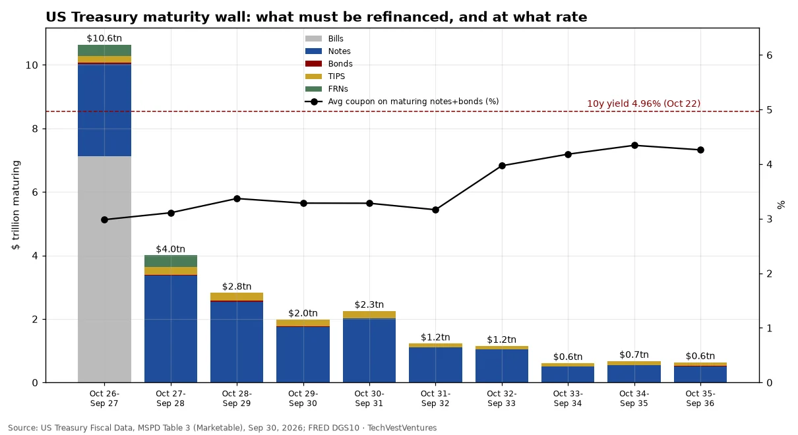
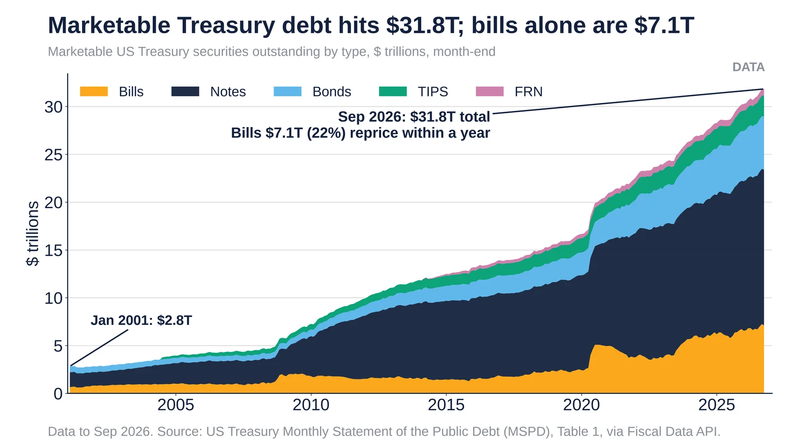

Q1. US Maturity Wall

Marketable Treasury securities outstanding on Sep 30, 2026, by when they mature (Monthly Statement of the Public Debt, security-level table). $10.6 trillion of the $31.8 trillion total comes due within 12 months, mostly bills, which already pay close to current short rates. The cliff is in the notes: the average coupon on notes and bonds maturing in the next 12 months is 2.98%, and 3.11% for the following year, against a 10-year yield near 5% in October. Every rollover at today's yields raises the interest bill, which already takes about 21 cents of every federal revenue dollar (see DC2). Face amounts are in millions in the source and converted here; TIPS shown at reported outstanding amount.
Sources: US Treasury Fiscal Data, MSPD Table 3 (Marketable), Sep 30, 2026 FRED DGS10

US marketable Treasury debt by security type, monthly to Sep 2026; bills are 22%. Source: Treasury MSPD.
- Sep 30 2026: $31.83T in marketable debt, made up of bills $7.12T, notes $16.28T, bonds $5.55T, TIPS $2.17T and FRNs $0.71T.
- Jan 2001: $2.8T. That is about 11 times as much in 25 years.
- The bills ($7.1T, 22%) roll over within 12 months and reprice at current short rates. This chart complements the existing DC1 wall, which shows $10.6T due within 12 months.
Sources: Treasury Fiscal Data, Monthly Statement of the Public Debt Treasury Fiscal Data API, MSPD Table 1